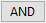
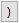

Weitere relevante Videos: Daten aus Arbeitsblatt extrahieren
Weitere relevante Videos: Daten aus Arbeitsblatt extrahieren
 Weitere relevante Videos: Daten aus Arbeitsblatt extrahieren
Weitere relevante Videos: Daten aus Arbeitsblatt extrahieren
Der Menübefehl Daten aus Arbeitsblatt extrahieren veranlasst Origin, Daten anhand eines benutzerdefinierten Bedingungsausdrucks im aktiven Arbeitsblatt zu finden. Die lokalisierten Datenwerte sind entweder (a) extrahiert (d. h., die Werte sind kopiert und eingefügt) in ein anderes Arbeitsblatt oder (b) die Zellen, die die Bedingung erfüllen, und sind markiert oder mit einem festgelegten Farbe gefüllt.
Es gibt zwei Hauptfelder (als "linkes Bedienfeld" und "rechts Bedienfeld" bezeichnet) plus eine Menüleiste mit Datei (Abfragen speichern und laden), Skripte (für die Vorverarbeitung der Daten) und Funktion (zum Einfügen von Funktionen in Ihren Ausdruck).
|
Vor Origin 2019b verwendeten Sie ein Alias anstatt eines Namens, der sich auf eine Datenspalte bezog. Aliase können noch verwendet werden -- und wenn die vereinfachte Zellennotation in der Arbeitsmappe AUSgeschaltet ist, müssen sie verwendet werden. Siehe Hinweise zur vereinfachten Zellennotation SCN, Verwendung des Alias und Benennung von Spalten |
Um das Hilfsmittel Dialog Daten aus Arbeitsblatt extrahieren zu öffnen:
Nach Eingabe der Bedingung im Feld Bedingung klicken Sie auf die Schaltflächen OK oder Anwenden, um die Extraktion durchzuführen.
Der linke Bereich listet alle Spalten im aktiven Arbeitsblatt, einschließlich einiger Informationen über diese, auf. Sie bestimmen, welche Spalten extrahiert werden, indem Sie die Kontrollkästchen in der Spalte Extrahieren aktivieren oder deaktivieren.
Sie bestimmen, welche Informationen für jede Spalte aangezeigt werden, indem Sie mit der rechten Maustaste ins linke Bedienfeld klicken und die entsprechenden Komponenten im Kontextmenü auswählen bzw. aktivieren.
| Extrahieren |
Verwenden Sie diesen Menübefehl, um festzulegen, ob die Spalte mit den Kontrollkästchen Extrahieren angezeigt wird oder nicht. Mit diesen Kontrollkästchen können Sie die Spalten festlegen, die extrahiert werden sollen. |
|---|---|
| Index |
Verwenden Sie diesen Menübefehl, um festzulegen, ob der Spaltenindex angezeigt wird oder nicht. |
| Name |
Verwenden Sie diesen Menübefehl, um festzulegen, ob der Spaltenlangname gezeigt wird oder nicht, falls er existiert. Verwenden Sie ansonsten den Kurznamen der Spalte. |
| Kurzname |
Verwenden Sie diesen Menübefehl, um festzulegen, ob der Spaltenkurzname gezeigt wird oder nicht. |
| Langname |
Verwenden Sie diesen Menübefehl, um festzulegen, ob der Spaltenlangname gezeigt wird oder nicht. |
| Geben Sie |
Verwenden Sie diesen Menübefehl, um die Spalte Typ anzuzeigen oder nicht. |
| Format |
Verwenden Sie diesen Menübefehl, um die Spalte Format anzuzeigen oder nicht. |
| Erster Wert |
Verwenden Sie diesen Menübefehl, um festzulegen, ob der 1. Spaltenwert gezeigt wird oder nicht. |
| Alle Kontrollkästchen zum Extrahieren aktivieren |
Verwenden Sie diesen Menübefehl, um alle Kontrollkästchen in der Spalte Extrahieren zu aktivieren. |
| Alle Kontrollkästchen zum Extrahieren deaktivieren |
Verwenden Sie diesen Menübefehl, um alle Kontrollkästchen in der Spalte Extrahieren zu deaktivieren. |
| Alle ausgewählten Spalten extrahieren aktivieren |
Der Anwender kann Spalten im Arbeitsblatt vorauswählen (z. B. über Bearbeiten: Auswählen), bevor die Funktion Daten aus Arbeitsblatt extrahieren aufgerufen wird. Verwenden Sie diesen Menübefehl, um alle Kontrollkästchen Extrahieren für die Spalten, die im Quellarbeitsblatt ausgewählt wurden, zu aktivieren. Dieses Menü ist nützlich, wenn Sie eine interaktive Auswahl zwischen dem Quellarbeitsblatt und diesem Dialog Daten aus Arbeitsblatt extrahieren durchführen möchten. |
Der rechte Bereich beinhaltet das Bearbeitungsfeld für die Bedingung, die Ausgabesteuerung und andere Einstellungen.
Dieser Teil des Dialogs wird nur gezeigt, wenn eine der folgenden Aussagen zutrifft (siehe):
Wenn Sie Aliase verwenden, wählen Sie Ihre Spalten im linken Bedienfeld und verschieben Sie sie dann mit Hilfe der Schaltfläche  in die Liste Spaltenvariablen für If-Abfrage wählen. Das Verschieben der Spalten erstellt ein Alias, das beim Definieren Ihrer Bedingung anstelle eines Spaltennamens oder -indexes verwendet werden kann.
in die Liste Spaltenvariablen für If-Abfrage wählen. Das Verschieben der Spalten erstellt ein Alias, das beim Definieren Ihrer Bedingung anstelle eines Spaltennamens oder -indexes verwendet werden kann.
| Alias | Mit dieser Option können Sie ein Alias für jede Spalte definieren. Dann können Sie dieses Alias zum Erstellen der Bedingung verwenden. Sie können das Alias bearbeiten: Dazu klicken Sie doppelt auf die Zelle, geben das neue Alias ein und klicken in den Bereich außerhalb. Das Alias kann mehrere alphanumerische Zeichen in der Länge enthalten, aber keine Leerzeichen. |
|---|---|
| Spalte | Dies dient der Anzeige der Spaltennamen. |
Das Hilfsmittel Daten aus Arbeitsblatt extrahieren wird verwendet, um Daten in Ihrem Arbeitsblatt auszuwählen, zu extrahieren und einzufärben gemäß einem Bedingungsausdruck, den Sie definiert haben. Geben Sie Ihren Bedingungsausdruck in das Textfeld Bedingung ein.
i.
Um zum Beispiel Zeilen, deren Werte in Spalte A größer sind als 0, zu extrahieren, können Sie Folgendes eingeben:
A>0
oder
Col(A) > 0
Wenn Sie ein Alias festgelegt haben, z. B. "Temperature" für Spalte A, können Sie auch Folgendes verwenden:
Temperatur > 0
Um Arbeitsblattdaten mit Hilfe von Textkriterien zu extrahieren, verwenden Sie die folgende Schreibweise:
Col(ColumnName)[i]$ == "Text";
Zum Beispiel:
Col(Station)[i]$ == "Northwest";
|
Hinweis: Origin verwendet beim Extrahieren mit Textkriterien einen Filter, der nicht zwischen Groß- und Kleinschreibung unterscheidet. |
Sie können jeden der unten aufgeführten logischen und relationalen Operatoren zum Definieren Ihres Ausdrucks verwenden. Zusätzlich können Sie jeden arithmetischen Operator (+, -, *, /, ^) nutzen.
| Operatoren | Bedeutungen |
|---|---|
|
> |
Größer als |
|
>= |
Größer als oder gleich |
|
< |
Weniger als |
|
<= |
Kleiner als oder gleich |
|
== (oder =) |
Gleich |
|
!= (NOT) |
Ungleich |
|
&& (AND) |
Und |
|
(OR) |
oder |
Das Verwenden dieser Schaltflächen ist optional (Sie können die Elemente direkt in das Feld Bedingung eingeben), kann aber einige Tastenanschläge einsparen.
| Schaltfläche | Verwendung | ||
|---|---|---|---|
Wird verwendet, um eine Spaltenvariable und Bedingung zu Ihrem Ausdruck hinzuzufügen.
|
|||
| Markieren Sie einen Teil oder den gesamten Ausdruck im Feld Bedingung und klicken Sie dann auf Entfernen, um ihn zu löschen. | |||
|  | Fügt "AND" zu Ihrem Ausdruck hinzu. | ||
| Fügt "OR" zu Ihrem Ausdruck hinzu. | |||
| Fügt "NOT" zu Ihrem Ausdruck hinzu. | |||
| Fügt eine linke Klammer zu Ihrem Ausdruck hinzu. | |||
|  | Fügt eine rechte Klammer zu Ihrem Ausdruck hinzu. | ||
| Klicken Sie auf diese Schaltfläche, um die Bedingung zu testen. Wenn ein Eintrag gefunden wird, der die Bedingung erfüllt, wird die gesamte Anzahl der Ergebniszeilen hinter Zeilen gefunden im Dialog Daten aus Arbeitsblatt extrahieren angezeigt und die entsprechenden Zeilen werden im Quellarbeitsblatt markiert. |
Legt den zu extrahierenden Zeilenbereich fest.
| Eine Spalte hinzufügen mit 1=wahr, 0=falsch |
Es wird eine Spalte zum Quellarbeitsblatt hinzugefügt, um anzuzeigen, ob die Bedingung erfüllt wurde: 1 für "Ja" und 0 für "Nein". |
|---|---|
| In neues Arbeitsblatt extrahieren |
Die Daten werden in ein neues Arbeitsblatt in der Quellarbeitsmappe extrahiert. |
| In neue Arbeitsmappe extrahieren |
Die Daten werden in eine neue Arbeitsmappe extrahiert. |
| In angegebenes Blatt extrahieren |
Die Daten werden in ein festgelegtes Arbeitsblatt extrahiert. Wenn Sie diese Option ausgewählt haben, sollten Sie den Arbeitsblattnamen im Feld Arbeitsblattname und Spalte von (der Standardwert ist 1) festlegen. |
| Mit angegebener Farbe füllen |
Füllen aller durch die Abfrage gefundener Zellen mit einer bestimmten Farbe. |
| Auswählen |
Auswählen aller durch die Abfrage gefundener Zellen. Beachten Sie, dass, wenn alle Spalten im Blatt als Eingabe ausgewählt sind, hier statt Blockzellen ganze Zeilen, die der Abfrage entsprechen, ausgewählt werden. |
| Beispiel laden |
Laden der Standardbeispiele |
|---|---|
| Laden |
Laden einer gespeicherten Bedingung |
| Speichern |
Speichern der aktuellen Bedingung |
| Speichern unter... |
Speichern der Bedingung mit einem neuen Namen |
Legen Sie LabTalk-Skripts fest, die vor der Datenextraktion ausgeführt werden. Auf diese Weise wird die Vorbereitung geeigneter Daten für die Bedingung unterstützt. Sie können ein Skript vor Datenschleife auswählen und ein Skript vor If-Bedingung festlegen.
Origin führt die Datenabfrageroutine folgendermaßen aus:
Angenommen es gibt zwei Spalten. Col(a) enthält einige Daten. Col(b) enthält drei Zahlen, die als Zeilenindizes der Zellen verwendet werden, die aus Col(a) extrahiert werden.
Wir können das Skript vor Datenschleife auswählen folgendermaßen festlegen:
j=1;
Dann legen Sie das Skript vor If-Bedingung fest mit:
if( i == col(b)[j] ) { temp = col(a)[i]; j++; }
Extrahieren Sie die Daten in dem Arbeitsblatt mit der folgenden Bedingung:
A == temp
Nachdem Sie auf die Schaltfläche Test geklickt haben, markiert Origin die Zeilen 1, 4 und 7.
|
Es gibt eine schnelle Möglichkeit, ein bedingtes Kontroll- oder Schleifenskript zu laden, wenn Sie Skript in den Feldern Skript vor Datenschleife auswählen bzw. Skript vor If-Bedingung eingeben. Klicken Sie mit der rechten Maustaste auf das Bearbeitungsfeld, um Bedingt/Schleife unten im Kontextmenü auszuwählen und dann eine gewünschte bedingte Struktur oder Schleife im Ausklappmenü. Die Syntax wird beim Cursor mit einfachen Kommentaren hinzugefügt. |
|
Hinweis: Um die Skripte zu verwenden, benötigen Sie mindestens Origin Version 8.0 SR3. |
Sie können Funktionen aus einer Anzahl von kategorisierten Listen einfügen, um Ihre Extraktionsbedingung zu erstellen. Zuletzt verwendete Funktionen sind im Untermenü aufrufbar. Dieses Menü Funktion funktioniert genauso wie das im Dialog Werte setzen.
Diese Funktionen umfassen: LabTalk-Funktionen und Standardfunktionen von Origin C.
Zum Hinzufügen einer benutzerdefinierten Funktion zur Auswahl Funktion lesen Sie bitte unter Eine benutzerdefinierte Funktion zum Setzen von Spaltenwerten erstellen.
Weitere Informationen zu diesen Funktionen finden Sie unter durch LabTalk unterstützte Funktionen.
Sie können auch vordefinierte Variablen oder eine Konstante in Ihrer Abfragebedingung aus dem Untermenü Vordefinierte Variablen verwenden. Hier finden Sie verfügbare vordefinierte Variablen und Konstanten.